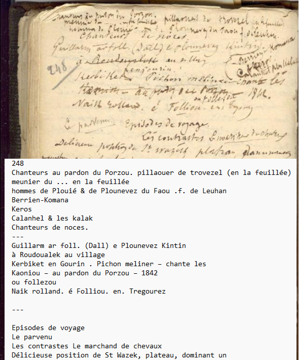
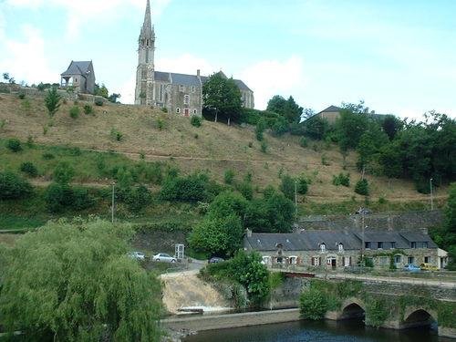
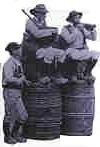
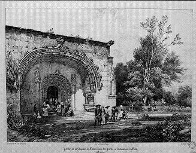
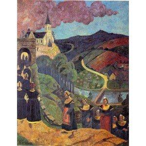
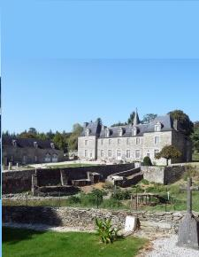
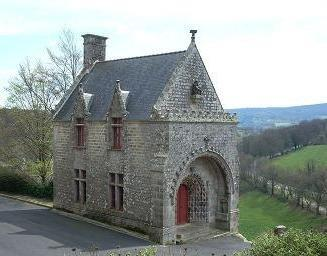
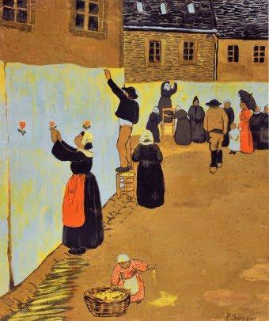
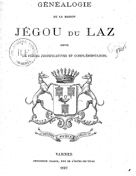

Le temps passé
In Olden Times
Dialecte de Cornouaille
|
On retrouve ces indications à la page 248 qui présente la liste des Chanteurs au pardon du Porzou::Pilhaouer [chiffonniers] de Trévezel en La Feuillée; meunier du ... en la Feuillée; hommes de Plouyé et de Plonevez du Faou; femmes de Leuhan, Berrien-Commana, Calanhel près de Callac. Chanteurs de noces: Guillarm Ar Foll (Dall [="l'Aveugle"]) à Plounévez-Quintin [cité à propos de "Jeanne la Flamme" et "La bataille des Trente"]; A La description de la création quasi-spontanée de la gwerz que l'on trouvera ci-après, même si elle résume les convictions politiques de son collecteur, repose donc sur un fond de vérité! Par ailleurs, mis à part le chant "La pauvre veuve" (p.190) qui fournit à lui-seul les 21 strophes (29 à 49) chantées par le 2ème laboureur (dont les 7 dernières ont été transformées - très certainement par La Villemarqué lui-même - pour remplacer la Sainte Vierge par le comte de Pratulo dans le rôle du "deus ex machina"), les sources de ce long poème sont disséminées dans tout le carnet sur des pages consacrées à d'autres chants. La Villemarqué pour s'y retrouver avait établi un système de renvois ("V.p. 115" etc.) qui préfiguraient presque les liens hypertextes! Seules les 9 premières strophes du chant intitulé "Keuniou (son dans)", soit en KLT "Kañvioù (son dañs) et en français l'étonnant oxymore "Deuil (chant à danser)", sont notées sur une page qui leur est propre (p. 69 / 36). Elles se terminent par un renvoi à la page 82 /40 où, après le chant "Paotred Logivi", figurent les strophes 10 et 11. L'ensemble correspond sans changement notable à la première intervention du premier meunier dans le Barzhaz. Il faut ensuite aller à la page 93 où commence le chant "In nomine Patris" qui deviendra la "Tournée de l'Aguilaneuf" du Barzhaz. Là se cachent en bas de page, précédées du repère "3" , les strophes 19 et 20 où le 1er chiffonnier déplore la conscription et, notée verticalement dans la marge gauche, la strophe 15 relative aux taxes dur le sel et le tabac. En outre, d'autres strophes de cette page semblent avoir inspiré certaines strophes du "Temps passé" (35, 37, 43, 50 et 51) toutes consacrées à la générosité du Comte Jégou du Laz et de son épouse. On n'est pas moins étonné de rencontrer ici 2 strophes qui ressemblent fort aux strophes 20 et 21 de Nominoé (dialogue entre le père de Kado et le portier). Il faut sauter à la page 110 contenant deux strophes, 23 et 24 du chant du 1er laboureur (la bonne dame charitable), puis à la page 156 / 85 pour découvrir, en marge d'une page consacrée au chant "Gwazi gouez alar" (Le cygne) avec un prolongement sur la page suivante (157 / 86), des bribes de chant correspondant aux strophes 63 à 77 du "Temps passé", soit à l'essentiel de la seconde intervention du premier meunier (les prophéties manquées). Deux renvois, vers les pages 167 / 97 et 215 / 128 permettent de trouver la suite du chant... On trouvera le détail du dispositif sur la page bretonne. Dans l'état actuel de nos recherches, seules manquent dans ce système de renvois les strophes 12-14 et 16-18, intervention du 2ème meunier à propos des impôts et 21- 22 + 25-28, intervention du 1er laboureur concernant l'abandon de la tradition d'aumône par les nouveaux propriétaires fonciers. Les essais de rimes qui apparaissent en plusieurs endroits sont sans doute imputables à La Villemarqué, plutôt qu'au chanteur. Mais peut-être a-t-il noté ici les tentatives faites au cours du processus de création collective à laquelle il affirme avoir assisté. Cependant, ni Luzel, ni Joseph Loth (comme le remarque Francis Gourvil dans une note, p. 402 de son "La Villemarqué") ne rangent ce chant historique dans la catégorie des chants inventés. La raison en est sans doute que les strophes 29 à 49 se retrouvent, non seulement dans "La pauvre veuve" notée par La Villemarqué, mais aussi, plus ou moins, chez Luzel, Gwerzioù I, page 80, 1867: "La Pauvre veuve" et chez de Penguern, "La Veuve de Tonquédec" (B.N. t.III, f°102). |
 Page 248 du carnet 2 |
Various sources apt to provide missing or complementary elements are listed in a margin note. Among them, the character addressed in the phrase "Ask on the same subject, in Gourin, Pichon, meliner (miller) in the village of Kerbijet (Kerbiquet) .He is the same who sang on the occasion of the Porzoù (Our Lady of the Gates of Chateauneuf-du-Faou) Pardon " Pichon is, to be sure, the first miller in the 'Olden Times' song". As these notes were not intended to be published, they can only be sincere and authentic. We find these indications on page 248 which presents the list of Singers at the Pardon feast of Porzou: : Pilhaouer [ragmen] at Trévezel near La Feuillée; Miller of ... in the Feuillée; men of Plouyé and Plonevez-du-Faou; women of Leuhan, Berrien-Commana, Calanhel near Callac. Wedding singers: Guillarm Ar Foll (Dall [= "the Blind"]) at Plounévez-Quintin [quoted in connection with "Joan the Arsonist" and "The combat of the Thirty"] ; At The below description of the quasi-spontaneous creation of a gwerz (embodying its collector's political commitments) is therefore based on a true background! In addition, except for the song "The poor widow" (p. 190) which alone provides the 21 stanzas (29 to 49) sung by the 2nd plowman (of which the last 7 have been transformed - certainly by La Villemarqué himself - to replace the Blessed Virgin by the count of Pratuloh in the role of "deus ex machina"), the sources of this long poem are scattered throughout the notebook, on pages dedicated to other songs. La Villemarqué, to retrieve them, had put up a system of references ("V.p. 115" etc.) that prefigured almost hypertext links! Only the first 9 stanzas of the song entitled "Keuniou (son dans)", or in KLT "Kañvioù (son dañs) and in French the astonishing oxymoron "Mourning (a dancing song)", are noted on a page of their own (page 69/36) They end up with a reference to page 82/40 where, after the ballad "Paotred Logivi", stanzas 10 and 11 appear. The whole corresponds without any notable change to the first intervention of the First Miller in the Barzhaz. We must then go to page 93 where the song "In nomine Patris" begins. This will become the Barzhaz song "Tour of the Aguilaneuf". There hide at the bottom of the page, preceded by the reference "3", stanzas 19 and 20 where the first ragman complains about conscription and, noted vertically in the left margin, stanza 15 relating to taxes on salt and tobacco. In addition, other stanzas on this page seem to have inspired certain stanzas from "Olden times" (35, 37, 43, 50 and 51) devoted to the generosity of Count Jégou du Laz and his wife. We are not less surprised to meet here two stanzas which closely resemble stanzas 20 and 21 of the Barzhaz song "Nominoé" (dialogue between Kado's father and the gate keeper). You have to jump to page 110 harbouring two stanzas, 23 and 24, of the First plowman's song (on the charitable lady), then to page 156/85 to discover, in margin of a page devoted to the song "Gwazi gouez alar" (the Swan), as well as on the next page (157 / 86), fragments corresponding to the stanzas 63 to 77 of "In olden Times", which are most of the second intervention of the First Miller (false prophecies). Two hints to pages 167/97 and 215/128 respectively allow to retrieve the continuation of the song ... Details of the device will be found on the Breton page. In the current state of our research, are only missing in this system stanzas 12-14 and 16-18 where the 2nd miller complains about taxes, and 21-22 + 25-28 embodying the 1st plowman's intervention concerning the abandonment of the alms tradition by new landowners. The rhyming attempts that will be found in several places are probably attributable to La Villemarqué, rather than the singer. But perhaps he has recorded here attempts made during the collective creation process which he claims to have witnessed. However, neither Luzel nor Joseph Loth (as stated by Francis Gourvil in a note on page 402 of his "La Villemarqué") includes this historical song on the list of the songs invented by La Villemarqué. The reason should be that stanzas 29 with 49, more or less roughly correspond with a song collected not only by La Villemarqué under the title "The poor widow", but also by Luzel, (Gwerzioù I, page 80, 1867), titled "The poor widow", and de Penguern,: "The Tonquédec widow" (B.N. t.III, f°102). |

Châteauneuf du Faou, Chapelle ND des Portes (1892-1893)
et chapelle extérieure pour les pardons de ND des Portes, (avant-dernier dimanche d'août).
La façade de l'ossuaire devenu sacristie date de 1438.
Mélodie -Tune
Mode hypodorien
| Français | English |
|---|---|
|
PREMIER MEUNIER 1. Bretons, faisons une chanson, O gué Bretons, faisons une chanson, sur les hommes de la Basse Bretagne, O! - Venez entendre, entendre, ô peuple ; venez entendre, entendre chanter. - 2. Les hommes de la Basse-Bretagne ont fait un beau berceau ciselé; - Venez entendre, etc. 3. Un beau berceau d'ivoire, orné de clous d'or et d'argent. 4. De clous d'or et d'argent orné, et ils le balancent avec tristesse; 5. Maintenant, en le balançant les larmes coulent de leurs yeux ; 6. Les larmes coulent, des larmes amères: celui qui est dedans est mort! 7. Il est mort, mort depuis longtemps; et ils le bercent toujours en chantant. 8. Et il le bercent, le bercent toujours, car ils ont perdu la raison. 9. La raison, ils l'ont perdue; ils ont perdu les joies du monde. 10. Le monde n'a plus pour les Bretons que regrets et peines de cœur; 11. Que regrets et peines d'esprit lorsqu'ils pensent au temps passé. SECOND MEUNIER 12. Dans l'ancien temps on ne voyait pas se promener ici certains oiseaux; 13. Certains oiseaux verts du fisc; [1] la tête haute, la bouche grande ouverte. 14. Le pays ne devait d'impôt, ni pour le sel, ni pour le tabac. 15. Sel et tabac coûtent bien cher, ils coûtaient moitié moins jadis. 16. Jadis on ne voyait pas sur la place les maltôtiers accourir, 17. Accourir, comme des mouches, à l'odeur du cidre aux barriques. 18. Toute barrique paye aujourd'hui l'impôt, hormis celle des ménétriers. - [2]  PREMIER PILLAOUER (chiffonnier) 19. On n'envoyait pas autrefois nos jeunes dans les pays étrangers; 20. Dans les pays étrangers -entendez-le ! -pour mourir, hélas! loin de la Basse-Bretagne. PREMIER LABOUREUR 21. En Basse-Bretagne, dans les manoirs, il y avait des hommes de bien, soutiens de leur pays ; 22. Maintenant est assis au haut bout de la table l'ancien gardeur de vaches du manoir 23. Au manoir, quand venait un pauvre, on ne le laissait pas à la porte; 24. La bonne dame allant au grand coffre, lui versait de la farine d'avoine plein sa besace ; 25. Elle donnait du pain à ceux qui avaient faim, et des remèdes à ceux qui étaient malades. 26. Pain et remèdes aujourd'hui manquent; les pauvres s'éloignent du manoir; 27. Tête basse, s'éloignent les pauvres, par la peur du chien qui est à la porte; 28. Par la peur du chien qui s'élance sur les paysans comme sur leurs mères. SECOND LABOUREUR 29. L'année où ma mère devint veuve, fut pour ma mère une mauvaise année. 30. Elle avait neuf enfants, et n'avait pas de pain à leur donner. 31. Celui qui a, celui-là donnera; je vais le trouver, dit-elle ; 32. Je vais trouver l'étranger: que Dieu le garde en bonne santé ! 33. - Bonne santé à vous, maître du manoir, je suis venue ici pour savoir une chose ; 34. Pour savoir si vous auriez la bonté de donner du pain à mes enfants. 35. Du pain à mes neuf petits enfants, Monsieur, qui jeunent depuis trois jours. 36. L'étranger répondit à ma pauvre mère quand il l'entendit: 37. - Va-t'en du seuil de ma porte, ou je lâche sur toi mon chien. - 38. Le chien lui fit peur, elle sortit et s'en allait pleurant sur le grand chemin. 39. La pauvre veuve pleurait: - Que donnerai-je à mes enfants ? 40. A mes enfants que donnerai-je, quand ils me diront: " Mère, j'ai faim ! " 41. Elle ne voyait pas bien son chemin, tant elle avait de larmes dans les yeux. 42. A mi-chemin de chez elle, elle rencontra le seigneur comte ; 43. Le seigneur comte du manoir de Pratuloh, allant chasser la biche au bois du Loh ; 44. Allant au bois du Loh chasser la biche, monté sur son cheval bai. 45. - Ma bonne chère femme, dites-moi pourquoi donc, pourquoi pleurez-vous ? 46. - Je pleure à cause de mes enfants, je n'ai pas de pain à leur donner 47. - Ma petite femme, ne pleurez pas ; voici de l'argent, allez en acheter. - 48. Que Dieu bénisse le seigneur comte ! Voilà des hommes, sur ma parole ! 49. Quand je devrais aller à la mort, j'irai pour lui, quand il voudra. TROISIÈME LABOUREUR 50. Voilà des hommes qui ont bon cœur: ils écoutent les gens de toute condition 51. Ils écoutent les gens de toute condition ; ils sont bons pour tout le monde. QUATRIÈME LABOUREUR 52. Ils sont bons pour les pauvres laboureurs: ce n'est pas eux qui les chasseraient 53. Comme le font les nouveaux maîtres, pour accroître leur fortune; 54. Sans penser qu'en l'accroissant de la sorte, ils la diminue pour l'autre monde. CINQUIÈME LABOUREUR 55. Ce n'est pas ceux-là qui font vendre le lit d'un fermier avec ses meubles. SECOND PILLAOUER 56. Ce n'est pas qui font payer deux écus d'amende à une mendiante; 57. Deux écus pour ce que sa vache a mangé d'herbe là où sa bête a toujours pâturé. TROISIÈME PILLAOUER 58. Ce n'est pas eux qui défendent de chasser; quand ils vont au bois, ils mandent tout le monde. SIXIÈME LABOUREUR 59. Ce n'est pas eux qui nieraient ce qu'ils doivent; leur parole vaut un contrat. 60. Ce n'est pas eux qui sont malades de ladrerie; ce sont les nouveaux gentilshommes. SEPTIÈME LABOUREUR 61. Les gentilshommes nouveaux sont durs ; les anciens étaient meilleurs maîtres. 62. Les anciens, s'ils ont la tête chaude, aiment les paysans de tout leur cœur. 63. Mais les anciens, hélas pour le monde! ne sont plus aussi nombreux qu'ils l'ont été. 64. Plus nombreux sont les mangeurs, que les hommes bons pour les pauvres. TROISIÈME PILLAOUER 65. Les pauvres seront toujours pauvres ; ceux des villes les mangeront toujours. PREMIER MEUNIER 66. Toujours ! pourtant on avait dit : « - La pire terre rapportera le meilleur blé; [3] 67. Quand reviendront les vieux rois, pour gouverner le pays » 68. Les vieux rois sont revenus, le vieux temps ne l'est pas. 69. Le vieux temps ne reviendra plus; on nous a trompés, malheureux ! 70. Malheureux, on nous a trompés! Le blé est mauvais dans la terre mauvaise. 71. Et le monde est de plus en plus dur; celui qui ne voit pas cela est fou. 72. Il est fou, celui qui a cru que les corbeaux deviendraient colombes 73. Qui a cru que la fleur du lis sortira jamais de la racine de la fougère ; 74. Qui a cru que l'or brillant tombe du haut des arbres. [4] 75. Du haut des arbres il ne tombe rien que des feuilles sèches ; 76. Il ne tombe que des feuilles sèches qui font place à des feuilles nouvelles ; 77. Que des feuilles jaunes comme l'or, pour faire le lit des pauvres gens. 78. Chers pauvres, consolez-vous, vous aurez un jour des lits de plume; 79. Vous aurez, au lieu de lits de branches, des lits d'ivoire dans l'autre monde. SECOND MEUNIER 80. Ce chant a été composé la veille de la fête de la Vierge, après souper. 81. Il a été composé par douze hommes, dansant sur le tertre de la chapelle: 82. Trois cherchent des chiffons, sept sèment le seigle, deux le moulent menu. Et voilà faite, voilà faite, ô peuple ; et voilà faite, voilà faite la chanson. - [1] Les agents du fisc dont l'uniforme est vert. [2] Les ménétriers bretons ont pour sièges des barriques vides. [3] Cité dans les notes de 1845 et 1867 annexées à la Prédiction de Gwenc'hlan. [4] Cf. strophes 8 et 14 de la Conversion de Merlin. |
FIRST MILLER 1. Bretons, let us all make a song, O gay! Bretons, let us all make a song. On Low Brittany, we won't be long, O! - O, come and listen, and listen, all of you; Here is a song to listen to. (twice)- 2. Men of Low Brittany have made, O gay! A pretty cradle finely inlaid, O! - O, come and listen, etc. 3. Finely with ivory inlaid, With gold and silver nails at its head O! 4. That gold and silver nails adorn, But as they rock it, they sigh and mourn O! 5. They are rocking it and heave sighs. Sour tears are pouring from their eyes O! 6. Bitter are the tears that they shed: The child in it, the child is dead O! 7. It's dead and it died long ago; But they rock it on and sing low O! 8. They rock it on and rock it on. I fear their common sense is gone O! 9. Reason and common sense they've lost. Their boat against the rocks was tossed. O! 10. Bretons, for you there are in store Only regrets. At heart you're sore O! 11. Remembering how things were before, Remembering the days of yore O! SECOND MILLER 12. In olden times one did not hear Flocks of strange green birds cawing here O!; 13. Green birds of the Tax Collection, [1] Gaping mouths full of presumption O! 14. With taxes overflowed their vaults, Neither on tobacco, nor salt O! 15. And salt and tobacco now cost, Two times as much as in years past O! 16. We did not, all over the place, See the accursed excise men race O! 17. Race as if to drink to the dregs, The cider that's left in our kegs O! 18. On every barrel duties are paid Save those on which pipers have played O! -[2]  FIRST PILLAOUER (ragman) 19. Our youths were not, in former time, To fight afar, sent in their prime O! 20. In alien lands, and sure to be Killed, far from Lower Brittany O!. FIRST PLOUGHMAN 21. In Lower Brittany there were Men in their manors to defend her O! 22. Now to the table's upper end The manor's cowherd did ascend O! 23. When a poor to the manor came, To turn him off would have been a shame O! 24. The lady would fetch from the chest A pouchful of meal for her guest O! 25. If you were hungry, she gave bread. If you were ill, some drugs, instead O! 26. Now the bread and the drugs are done And the poor the manor do shun O!; 27. With their heads held down they go 'way. Dogs at the gate hold them at bay O!; 28. They're afraid of the dogs thap leap Onto them while their mothers weep O! SECOND PLOUGHMAN 29. The year she became a widow. Was to my mother a year of woe O! 30. For the nine children she had born, She had no bread and had no corn O! 31. - Those who may give, for sure will give; I just have to go where they live O! 32. There's a foreign lord in the manor God keep him in wealth and honour O! 33. - Good day, Master of the manor, Be good, I ask you a favour O! 34. Would you be so good, as I said, As to give my children some bread O? 35. To my nine children give something, For three days they have been fasting O! 36. When he heard it, the newcomer Has said to my hapless mother O! 37. - Don't tread my threshold with your clogs, Or I unleash on you my dogs O! - 38. She was afraid and went away. And she was weeping on her way O! 39. Oh, how she wept, the poor woman: - Now, what shall I give my children O? ? 40. My poor children, when they humbly Implore: "Mother, we are hungry O!" 41. She knew not where she was going, Since her eyes were overflowing O! 42. She did not pray to God in vain: She met the lord of the domain O! 43. The lord of manor Pratuloh, Had gone doe-hunting to Wood Loh O! 44. Had gone doe-hunting to the Wood. His bay charger before them stood O! 45. - Why do you cry, my dear, tell me If I could help you let me see O? 46. - I cry on my hapless children, For I have no bread to give them O! 47. - Do not cry, my dear, good woman; Here, for you, money to buy some O.- 48. God's blessing be upon this lord! He is a man, upon my word O! 49. Even if it should be to death I'd follow him, upon my faith O! THIRD PLOUGHMAN 50. These are good folks who lend an ear And for one's standing do not care O! 51. To all standings they lend an ear And comfort whoever sheds tears O! FOURTH PLOUGHMAN 52. They treat their tenants decently, Do not dismiss them abruptly O! 53. As new landowners often do Keen on making their wealth accrue, O! 54. Disregarding, in doing so, That they are sure to Hell to go O! FIFTH PLOUGHMAN 55. They would never make sell and clear Their tenants' house from bed and gear O! SECOND PILLAOUER 56. They never would stoop so far down As to fine beggars with a crown O! 57. A crown to make good for their cows Browsing there where they used to browse O! THIRD PILLAOUER 58. They would not prohibit hunting; When they hunt they have you coming O! SIXTH PLOUGHMAN 59. What they owe, they pay, every bit. Their word is as good as a writ O! 60. They never behave niggardly: The disease of the new gentry O! SEVENTH PLOUGHMAN 61. The new landlords are harsh, that's true. The old ones better than the new O! 62. The old ones, though fiery-tempered, To the peasants were good-hearted O! 63. The old ones, unfortunately! Are rare compared to formerly O! 64. Many a man is an ill-doer, Rare those who are good to the poor O! THIRD PILLAOUER 65. The poor will be poor forever Devoured by the town dweller O! FIRST MILLER 66. And yet as an old saying goes «On worst soil soon the best wheat grows O! [3] 67. When the old kings have come back home, To rule the land, each on his throne O!» 68. The olden kings are back by now. Not the olden times, anyhow O! 69. The olden times never came back. We are a misled, hapless pack O! 70. A hapless pack, we've been deceived! In bad soil may thrive no good seed O! 71. The world got harsher, quite a bit; There is no use denying it O! 72. Only lunatics could suppose That ravens would turn into doves O! 73. Who could expect lily flowers To spring off from roots causing scours O! 74. Who could expect glittering gold From the buds on trees to unfold O! [4] 75. Off the high trees nothing falls down Save withered leaves all around O! 76. Withered leaves, off tree and shrub, With new leaves hidden in each bud O! 77. Withered leaves, golden or fawn, For the poor to make their bed on O! 78. Dear poor, herein is your solace: Your eider quilt will be flawless O! 79. Instead of a bed of bracken, An ivory bed in Heaven O! SECOND MILLER 80. On the eve of the Pardon day, This song was made and straight away O! 81. By twelve songbirds on the same perch Who danced on the knoll near the church O! 82. Three of us gather rags and shreds, Seven sow rye, two grind for breads O! O come and listen and listen, all of you! We've made this song, earnest and new! - Transl. Christian Souchon (c) 2007 [1] The inland revenue officials wore a green uniform. [2] Breton pipers used to be perched on empty casks when they played. [3] Quoted in the notes appended in 1845 and 1867 to the Prediction of Gwenc'hlan. [4] See stanzas 8 and 14 of Merlin's conversion. |
Cliquer ici pour lire les textes bretons.
For Breton texts, click here.

|
Résumé "Ar roueoù gozh zo distroet, an amzer gozh n'he-deus ket graet". "Les anciens rois sont revenus, l'ancien temps, lui, ne l'est pas". Malgré la Restauration le sort des paysans bretons est resté pitoyable: traqués par les agents du fisc, contraints de faire leur service militaire loin de la Bretagne, ignorés de la nouvelle aristocratie qui ne remplit plus son devoir de soutien des pauvres, ils ne croient plus aux promesses d'une vie meilleure dans ce monde et m'espèrent plus qu'en l'autre monde. L'enfant mort dans le berceau ce sont leurs illusions perdues... Pour changer, le commentaire qui suit reproduit mot à mot, pour l'essentiel, l'argument et les notes de La Villemarqué. On verra ainsi qu'il était un prosateur de grand talent. La profession de foi de La Villemarqué (Argument) "Les regrets patriotiques que nourrissent encore les plus énergiques des Bretons modernes, principalement parmi le peuple des montagnes [foyer de Chouannerie], ne se traduisent plus guère aujourd’hui qu’en rustiques effusions ; l’esprit national qui portait les pères à la révolte ne fait plus insurger les fils, mais il les maintient dans une sorte d’opposition contre le présent. Il ne s’est pas encore allié chez les paysans, comme chez les Bretons des classes supérieures, aux idées larges et élevées qu’ont partout éveillées les progrès de la haute civilisation [Quelques années plus tard, ces idées allaient conduire à la révolution de Février 1848 qui mettait fin au règne de Louis-Philippe et inaugurait la IIème République]. Le flambeau de ces idées n’éclaire pas encore d’un jour vrai, pour les montagnards, les ruines croulantes d’un passé qu’ils apprécient moins bien que leurs compatriotes instruits, en les aimant autant : grâce aux bienfaits d’une instruction donnée avec intelligence, discernement et patriotisme, et adaptée à leur idiome, à leurs croyances et à leurs mœurs, ils pourraient bientôt allier eux-mêmes les lumières aux sentiments. En attendant cette union désirable, ils conservent une partie des idées nationales de leurs ancêtres, moins, toutefois, l’espoir de les réaliser. Les hommes qui ont assez vécu pour: Cette masse de mécontents, trompée dans ses espérances, et qu’impatiente le joug nouveau de la loi générale [en ce qu'elle est souvent la négation des franchises garanties par l'Edit d'union perpétuelle], entretient dans le cœur du paysan des montagnes, par les récits traditionnels, par les conversations journalières et par les chants nationaux, le vieil esprit patriotique. J’ai eu occasion de voir par moi-même, il y a peu d’années, quel enthousiasme donne au peuple, comme le remarque un ancien auteur, le souvenir de l’indépendance primitive." Le Pardon de Notre-Dame des Portes  "C'était la veille de la fête de Notre-Dame du Porzou [Notre-Dame des Portes à Châteauneuf-du-Faou], si vénérée dans les montagnes Noires. Plusieurs des pèlerins, accourus à grandes journées de toutes les parties de la Basse Bretagne, se trouvaient réunis, à table, dans une métairie, au fond de la vallée, où ils devaient passer la nuit. J’y fus conduit par un jeune paysan de mes amis, neveu de [nos] métayers. La conversation roulait sur le temps passé, la dureté des impôts, la misère présente, et était fort animée [ces sujets sont toujours d'actualité, et pas seulement en Basse-Bretagne!].Le souper fini, les pèlerins quittèrent la table ; douze d’entre eux sortirent, et, passant la rivière, ils gravirent la montagne opposée, au sommet de laquelle s’élève la chapelle patronale, et allèrent danser aux chansons, suivant la coutume, sur le tertre, jusqu’à la nuit. Le lieu et l’heure eussent été choisis à dessein qu’ils n’eussent pas mieux convenu aux sentiments sous l’impression desquels les avait laissés leur conversation. Derrière eux, la chapelle aux murailles blanches, avec son cimetière sombre, ses tombes au milieu des herbes, ses mille petites croix en bois noir, ses grands ormeaux pleins de mystère et d’ombre ; son reliquaire isolé, aux ogives festonnées de lierre, dont les vertes draperies, légèrement soulevées par le vent, laissent entrevoir les os vénérés des ancêtres" [La chapelle actuelle date de 1892, le reliquaire-ossuaire existe encore (cf. illustrations)]; au fond de la vallée, le pont, aux parapets duquel s’appuyaient des mendiants assis dans la poussière, étalant a l’œil des passants leurs plaies ou leurs membres difformes ; la rivière [l'Aulne], comme eux plaintive, baignant d’un côté la montagne, de l’autre des prairies bordées d’un sentier serpentant, comme un long ruban de satin blanc, au milieu du gazon ; au loin, pieds nus, le bâton à la main, dans les costumes les plus variés de couleur et de forme, des pèlerins harassés de fatigue, se découvrant le front et s’agenouillant aussitôt qu’ils voyaient les murs blancs de la sainte chapelle apparaître a travers les arbres ; pour horizon enfin, la chaîne arrondie des Montagnes Noires, dont le soleil couchant dorait le pic le plus élevé, couronné de bois sombres, en colorant au loin, de ses derniers rayons, les eaux fuyantes de la rivière." Les citations du premier meunier Le passage qui suit qui décrit la genèse collective d'une gwerz est un morceau d'anthologie souvent repris dans les textes qui traitent des ballades populaires bretonnes. Comme toujours, des esprits méfiants sont d'avis qu'il pourrait s'agir d'une affabulation au motif qu'eux-mêmes n'ont jamais été témoins d'un tel processus de création spontanée. On peut, effectivement, être troublé par la présence dans ce texte, dès 1839, de citations tirées, Comme ces deux citations sont faites par le premier meunier dont il est dit qu'il "était le plus célèbre chanteur de noces des montagnes", on peut admettre, avec scepticisme, il est vrai, qu'il émaille son propos de dictons de ce genre. Dans une lettre adressée à son cousin, Camille de La Villemarqué indique que Clémence Penquerc'h, la fille d'une des chanteuses citées dans les "Tables" se souvenait en 1907 du chant "La prédiction de Guiclan". M. Donatien Laurent en conclut "Je crois plus probable, pour ma part, qu'il ait existé à Nizon un chant -ou peut-être des fragments de vers enchâssés dans un récit en prose- à caractère prophétique et rattaché au nom de Guiclan ou quelque autre nom approchant...Les bribes de son histoire qui survivent dans la tradition bretonne, tant orale qu'écrite , s'accordent pour en faire un prophète d'un type bien connu dans les littératures celtiques insulaires, le correspondant de Merlin le sauvage." La complainte du second laboureur Quant aux vingt couplets chantés par le second laboureur, ils résument un autre chant, collecté par Luzel et publié dans les Gwerzioù I, page 80, en 1867: "La Pauvre veuve" ainsi que par de Penguern, "La Veuve de Tonquédec" (B.N. t.III, f°102). On remarque que dans ces deux pièces il n'est dit nulle part que le propriétaire au coeur de pierre soit un étranger au pays et que le rôle du comte de Pratuloh auquel la famille Hersart était apparentée y est tenu par un ange. Francis Gourvil dans son "La Villemarqué", page 483, en conclut: "Ainsi les naïfs couplets de "La pauvre veuve", convenablement traités, pouvaient servir la conception aristocratique du Barzaz-Breiz et exprimer des sentiments xénophobes dont le peuple breton et sa littérature orale, pas plus que sa littérature écrite n'ont jamais témoigné." Composition collective d'une gwerz  "Ce soleil près de disparaître, image d’un autre soleil qui se couche aussi, lui, pour ne plus se lever ; cette terre sacrée qu’ils foulaient, ces tombes des aïeux morts le fer à la main, cette nature triste et sublime parlait-elle au cœur des montagnards, ou leur émotion venait-elle seulement de la conversation animée à laquelle ils avaient pris part ? Je ne sais, mais elle était forte ; et, comme toutes les grandes passions des races primitives, elle se traduisit instinctivement en une de ces chansons de danse improvisées, véritable ballade antique, malheureusement trop rares aujourd’hui.Un maître meunier, qu’on me dit être le plus célèbre chanteur de noces des montagnes, menait le branle et la chanson; pour collaborateur, il avait son garçon meunier, sept laboureurs, et trois chiffonniers ambulants. Sa méthode de composition me donna une idée exacte de celle des improvisateurs bretons. Comparant les Bretons trompés dans leurs espérances à un père devenu fou qui berce en chantant son enfant mort depuis longtemps [strophes 1 à 11], le maître meunier des montagnes débuta de la sorte:" (suit la gwerz). Remarques: En se référant à la page bretonne consacrée au présent chant, on constate ce qui suit: Dans le carnet 2, seules les 11 premières strophes pp. 69/3, à savoir, celles qui correspondent à l'intervention du Premier Meunier, (le fameux chanteur de noces Pichon de Gourin cité p. 41/21), revêtent systématiquement cette forme. La société rurale de Basse Bretagne (Notes) "Ainsi chantaient les montagnards, se tenant par la main, et décrivant perpétuellement un demi-cercle de gauche à droite et de droite à gauche, en élevant et baissant a la fois leurs bras en cadence, et sautant à la ritournelle. J’ai déjà fait observer dans l’introduction de ce recueil que la plupart des chants populaires se composent de cette manière en collaboration, Une conversation a ému les esprits ; quelqu’un dit : « Faisons une chanson de danse ! » et l’on se met à l’œuvre. Le tissu, résultat de l’impression de tous, a naturellement de l’unité, mais il est varié : chacun y brode sa fleur, selon sa fantaisie, son humeur et sa profession. Ces nuances de caractère se distinguent facilement dans la pièce qu’on vient de lire. Il fréquente les villes ; il va y vendre ses chiffons; il sait ce qu’ils lui ont coûté de peines à recueillir et ce qu’on les lui a payés ; et il accuse les bourgeois [strophe 65]. Il a ouï dire en voyageant qu’un spéculateur étranger, Anglais ou Allemand, attiré dans les montagnes Noires par l’appât des terres en friche [strophes 52 à 54], a fait verbaliser sans pitié contre la vache du pauvre errant au milieu des bruyères [strophes 56 et 57], ou contre le chien du paysan à la poursuite d’un sanglier qui dévaste les champs des laboureurs voisins ; et il accuse encore [strophe 58]. celui qu’on va en expulser, ou qui a vu le nouveau maître venir, la loi française en main, ordonner de sortir à un de ses parents [strophe 55]. et vient, fidèle à son métier et à son caractère, terminer la pièce par un compte [strophes 80 à 82]; Un jour viendra, sans doute, où les esprits se calmeront. Alors la loi sera moins rigoureuse, l’homme des villes moins exigeant, l’étranger naturalisé moins dur, l’habitant des campagnes lui-même plus pénétré du sentiment de ses devoirs et de ses droits. Tout cœur qui bat pour son pays doit souhaiter ce progrès moral. Le temps seul pourra le réaliser complètement, mais il est du devoir de l’homme de lui venir en aide." L'intervention du Comte Jégou du Laz  Des efforts généreux, couronnés du succès, ont déjà été tentés pendant ces dernières années. Les anciens propriétaires du sol se sont crus obligés de donner l’exemple. Un d’eux, celui-là même dont la chanson qu’on vient de lire fait un si juste éloge, M. le comte Jégou du Laz de Pratuloh [strophes 42 à 51], arrêta par son influence une sédition moins légitime dans ses motifs, mais qui aurait pu devenir aussi déplorable dans ses conséquences que celle dont l’explosion ensanglanta, au quinzième siècle, la paroisse de Plouié. Cette anecdote est curieuse, même au point de vue de l’histoire; on me permettra de la citer."Suit une histoire embrouillée dans laquelle le comte essaye d'arrêter une émeute de paysans contre un notaire qui avait "abusé de l'autorité de son nom" pour congédier des "domaniers". Les émeutiers avaient obtenu, en molestant les gendarmes, que le notaire se rétracte par écrit. Le rôle du comte dans cette affaire fut bien modeste: il empêcha qu'on sonne le tocsin pour grossir les rangs des insurgés et expliqua à quelques manifestants que leur papier obtenu sous la menace n'avait aucune valeur. Ses interventions auprès de la justice semblent n'avoir eu que peu d'effets: quatre meneurs qui, selon le comte, "méritaient d’être punis", furent jetés en prison "pour l’exemple et pour faire comprendre la loi". Il rencontra peu après le notaire qui se perdit en remerciements: "sans son ingénieuse et puissante intervention, il étais ruiné ou tué par ses domaniers." Ce à quoi le comte répondit "Mon devoir...m’obligeait à défendre la propriété et les propriétaires." L'aristocratie bretonne se trouve, selon La Villemarqué, investie d'une mission éducative: "qu’ils soutiennent, en les éclairant, leurs frères des classes populaires ; qu’ils les rendent meilleurs en les rendant heureux. Si les révolutions les ont dépouillés de quelques vains titres, ils en acquerront de réels à l’estime des honnêtes gens." Est-il besoin de préciser que la version allemande du Barzhaz publiée en 1859 par Hartmann et Pfau et qui reprend mot pour mot l'ensemble des commentaires de La Villemarqué, n'a pas jugé bon de traduire cette édifiante défense et illustration du paternalisme aristocratique? Le comte Joseph-François-Bonabes Jégou du Laz (1783-1851) Il avait grandi, privé de ses parents, et subi comme tant de jeunes aristocrates les vicissitudes de la révolution. Après un riche mariage, le jeune officier put acquérir, en 1806, le château de Pratulo et l'immense propriété qu'il consacra sa vie à aménager et à exploiter. Cette vie industrieuse est citée en exemple par la Comtesse du Laz, auteur de la Généalogie de la maison Jégou du Laz (Vannes 1897) et le site du château de Pratulo en Cléden-Poher (a-pratulo.com/historique/) précise qu'il acheta notamment deux péniches pour remonter le sable calcaire de la rade de Brest, ce qui a permis d’introduire l’assolement triennal et faire de cette région une riche région d’élevage. Seule ombre à cet idyllique tableau: nommé commandant de la garde nationale de l'arrondissement de Châteaulin, il fut élu membre du conseil général du Finistère et devint maire de Cléden-Poher jusqu'en 1830. A la révolution de Juillet, son attachement aux Bourbons, lui valut d'être emprisonné pendant trois mois à Rennes. Après quoi il renonça à la politique. Le vieux château, avait été bâti en 1420 par un Douglas, proche parent du roi d’Ecosse de l’époque, un Stuart. Comme on l'a dit, ses descendants, les Muzillac, furent contraints de le vendre en 1806 aux Jégou du Laz qui le reconstruisirent en 1906. Ce château brûla en 1946 et sa restauration, commencée en 1992 est aujourd'hui achevée. On peut supposer que son jeune frère Eugène (1788-1874) est le héros du chant O kanañ war al lenn, consigné page 275 du 1er carnet de Keransquer. La tournée de l'Aguilaneuf De l'examen de la page 93 du carnet de collecte N°2 où débute le chant "In nomine Patris", il ressort que le passage:
Sont également authentiques, les 2 derniers distiques de cette colonne qui nous apprennent le nom du chef de la bande d'étrenneurs:
On a donc confirmation que le chant original qui porte dans le manuscrit le titre "In nomine Patris" a bien été collecté (en janvier 1841 ou 1842) "en Spézet", comme il est dit dans l'argument, à proximité du château de Pratulo, près de Cléden-Poher. D'ailleurs Châteauneuf-du-Faou où la création "spontanée" de la présente gwerz est censée avoir eu lieu n'est qu'à 6 km à l'ouest de Spézet. L'expression que l'on trouve à la strophe 18:
D'ailleurs, à la strophe suivante les étrenneurs déclarent: "Ni 'n-eus c'hoazh seizh lev da ober" (il nous reste encore 7 lieues à faire). Cette distance proverbiale qui est celle qui séparait les relais de poste valait en Bretagne 31 km. Le Releg pourrait donc être à la fois l'étape ultime de la tournée et le village d'origine des étrenneurs dont il ne reviendront que pour les moissons et les foins (strophes 48 et 61). On remarque toutefois que La Villemarqué a remplacé à la strophe 13, où le gardien de la maison pour ne pas laisser entrer les "étrenneurs", prétexte que la patronne est partie, avec les clés pour se rendre à Pontivy ("aet eo da Bondivi") par "da Zant-Divi". Cette dernière localité, Saint-Divy, est aussi éloignée de Spézet que l'est Pontivy, mais elle est proche d'un autre "Releg", Le Rélecq-Kerhuon, à proxiité immédiate de Brest. Peut-être est-ce la forme "Pondivi" , moins usuelle que "Pondi" ou "Ker-Pondi" qui l'a incité à opérer ce changement. Deux liens à ce sujet: Famille de Jegou et Gallica Texte/Image. |
Résumé "Ar roueoù gozh zo distroet, an amzer gozh n'he-deus ket graet". "The olden kings are returned, the olden times are not". In spite of the Restoration of the Bourbon Monarchy in France (1815) the fate of the Breton country folks remains pitiable: Hunted down by the Inland revenue officials, forced to discharge their military duties far from Brittany, despised by the new gentry who disregard their social liabilities towards the indigent, they don't hope for a better life except in the other world. The dead child in the cradle symbolizes their lost illusions ... To make a change, most of the comments below are the word by word copy of the "Argument" and "Notes" composed by La Villemarqué. They highlight his outstanding proficiency as a prose writer. La Villemarqué's political creed "The old national consciousness still felt by the most ardent modern Bretons, especialy the Mountain dwellers [the area where the Breton Chouan uprisings broke out] is vented nowadays only in outbursts of rustic anger, if ever. If it had prompted the sires to revolts, it does no longer make rise their sons, but keep them reluctant to accept the present social order. It did not yet assimilate, among the country folks as it did among the Bretons in the upper classes, the large and lofty ideas generated by progress and improved civilization. [A couple of years later, the same ideas were to trigger off the February 1848 Revolution, the overthrow of king Louis-Philippe's regime and the institution of the Second French Republic]. The flaming torch of these ideas has not yet thrown a true light on the rubbles of a past which the Mountaineers, unlike their educated fellow countrymen, tend to embellish, when they claim to be so fond of it. Thanks to the beneficial action of cleverly dispensed education, taking into account their national consciousness, as well as their national idiom, their beliefs and their habits, they would soon be able to merge enlightenment with their own feelings. But for the time being, they are bound and tied to part of their ancestors' national creed, though they have mostly given up hope that it would materialize. Those who have lived long enough to: these dissatisfied crowds whose hopes were deluded and patience harassed out by the yoke imposed on them by the state's law [which often is contrary to the franchises embodied in the Perpetual Union Act], maintain in the Mountaineers' lore, every day's talks and folk songs, the old patriotic consciousness. I happen to have been an eyewitness, some years ago, of such burst of enthusiasm in these people, due to the memory of their ancient independence, as an old author puts it." The Pardon of Our Lady of the Doors  "It was on the eve of the feast of Our Lady of Porzoù [Notre-Dame-des-Portes (Our Lady of the Doors) at Châteauneuf-du-Faou], whose statue is so revered in the Black Mountains.Several of the pilgrims that had gathered on long walking days from all parts of Lower Brittany, were sitting, in the valley, at the dinner table of a farm where they were to stay overnight. I had been led there by a country boy who was a friend of mine: [our] tenant farmers' nephew. The topics of the spirited talks were the good old times, the insufferable taxes, the present utter destitution [topical subject matters, even today, not only in Lower Brittany!] After dinner, the pilgrims left the table and twelve of them went out, crossed the river and climbed up the opposite hill to the top where the pilgrimage chapel stood and they set dancing there, as is common in such cases, until sunset. If the place and the time had been chosen on purpose, they would not have be more attuned to the impressions left on them by their previous conversation: As a background, the chapel with its whitewashed walls, the dark churchyard around it, the thousand graves, overgrown with weeds and topped by small black wood crosses, the tall elm trees, full of mystery and darkness; the reliquary with its lancet arches festooned with ivy that formed a green curtain gently moving in the wind and uncovering piles of hallowed relics [the reliquary still exists: see opposite picture. But the present chapel was built in 1892]; in the valley, below, the bridge, with beggars sitting on it in the dust, leaning on the parapets, so as to display their wounds and infirmities to the passers-by; the river [the Aulne], as doleful as these poor people, watering on one side the hill, on the other side green leas limited by a winding path, that looked like a long white satin ribbon uncoiled amidst the lawn; in the distance exhausted, barefooted pilgrims, in most various attires, all different in shape and colour, that came leaning on their staffs and took off their hats and knelt down, as soon as they spied behind the trees the white walls of the holy chapel; the horizon was closed by a line of rounded hills, the Black Mountains, whose highest summit, covered at the top by dark woods, was gilded by the sunset that coloured with its last light the swift waters of the river." The sayings quoted by the first miller The following passage, telling of people teaming up to compose a gwerz, is a piece of anthology often quoted in texts about Breton folk ballads. As usual, distrustful critics suggest that we might be fooled by a fable, since they themselves never could witness such spontaneous collective creation in progress. And really, it is confusing to find in this text, as from the 1839 edition, two excerpts: But since both quotations are put in the mouth of the first miller who was allegedly " In a letter sent to her cousin, Camille de La Villemarqué states that Clémence Penquerc'h, daughter to one of the singers listed in the "Tables", remembered in 1907 the song "Guiclan's prophecy". M. Donatien Laurent concluded: " I consider it probable that a song circulated in the Nizon area, - or, maybe, fragments of poetry inserted into a prose narrative - with prophetic character and connected with the name "Guiclan" or some like name... Shreds of his history are still extant in Breton tradition, both oral and written, and they agree in making of him a special kind of prophet, well-known in Britain's Celtic literature, the counterpart of "Wild man Merlin". The lament sung by the second labourer As for the twenty stanzas, sung by the second labourer, they sum up another song, collected by Luzel who published it in his "Gwerzioù I", page 80, in 1867: "The poor widow", and by de Penguern, "The Tonquédec Widow" (B.N. t.III, f°102). It is remarkable that in neither version is there mentioned that the harsh landowner is a stranger or a foreigner, and that the role imparted to Count Pratuloh to whom La Villemarqué's family was related is played by an angel. Francis Gourvil in his "La Villemarqué", page 483, concludes: "Thus the naive verses of "The poor Widow", deftly worked out, were made to echo the aristocratic views of the Barzaz-Breiz and express a xenophobia you would look for in vain in the oral or written literature of the Breton people." How people teamed up to compose a "gwerz"  "The sun was near to set, recording another sunset that would be followed by no sunrise: did the hallowed soil they trod, the graves of their Chouan progenitors who fell fighting, this dull but sublime nature speak to the souls of these Mountaineers; or was it the mere feeling aroused by their previous spirited conversation? I don't know, but it was a keen feeling. And as great passions in uncouth races always do, it instinctively expressed itself in one of those extempore dancing songs, one of those true antique ballads that have become so rare nowadays.A master miller, allegedly the most famous wedding singer in the Mountains, was the dance and song leader. His helpers were his apprentice, seven ploughmen and three wandering ragmen. His composing method gave true insight in that of Breton improvisers in general. All of them would sing until it was again the first singer's turn. Their song compares the Bretons deceived in their expectations with a father turned mad who rocks a cradle containing a child that's dead since long [stanzas 1 to 11]. Remarks: Referring to the Breton page devoted to this song, we may state the following: In notebook 2, only the first 11 stanzas on pp. 69/3, i.e. the long First Miller's speech (the famous wedding party singer Pichon from Gourin addressed on p. 41/21), systematically assume this shape. Rural society in Lower Brittany (Notes) "Thus sang the Mountaineers, holding each other by the hand and moving to and fro in a half-circle, whereby they raised and lowered their arms rhythmically and took a leap at each refrain. I already mentioned in the Introduction to this collection that most folk songs are composed in the same collective way: Minds were upset by a conversation; someone said: "Let us make a dancing song!" and they set to work. The fabric resulting from everybody's printing is both plain and many-coloured. Everybody embroiders it with their own flower attuned to their fancy, humour and calling. These shades of character are easily detectable in the above poem. He often dwells in towns where he sells his rags. He knows the difficulty of collecting them and what they will pay for them and he accuses the middle class [stanza 65]. He heard, on his trips, of a foreign speculator, an Englishman or a German, tempted by the many patches of fallow land in the Mountains [stanzas 52 to 54], who brought a suit against a poor whose cow had browsed his heath land [stanzas 56 and 57], or against a farmer whose dog was chasing, on his property, a boar that had devastated his own fields. And again he accuses [stanza 58]. either because he was the one who was banned, or because he saw the new landowner brandish the French civil code and evict one of his relatives [stanza 55]. and, pursuant to his calling and his frame of mind concludes the piece with a sort of muster-roll [stanzas 80 to 82]. Some day, to be sure, everyone's mind will cool down. Then law will be less rigorous, the town dweller less exacting, the naturalized foreigner less greedy, the country dweller himself more conscious of the liabilities that are the counterpart of his rights. Every loyal patriot should strive for this moral progress. This is a thing that only time is able to achieve, but it is also man's duty to give a helping hand." Count Jégou du Laz's intervention  "Successful endeavours were already made by generous men in the years past. Old-established landowners made a point of giving a good example. One of them, who is so justly praised in the present song, Count Jégou du Laz de Pratuloh [stanzas 42 to 51], put an end by his ascendancy over the country folk to a sedition less justified in its motives, but possibly more harmful in its consequences than the uprising that bathed in blood, in the 15th century the parish Plouié. This anecdote is piquant, even from a historical point of view, and I'd like to recount it:"Follows an intricate story: The count tries to stop a riot of peasants against a solicitor who had "taken advantage of his (i.e. the Count's) name and position" to dismiss "crofters". The rioters had obtained, after they had manhandled the constables, that the solicitor withdrew his summons in writing. The part played by the Count in this case was, in fact, a limited one: he prevented the insurgents from sounding the tocsin, which would have increased their number. He also explained to a few of them that a written declaration, if forcibly exacted, has no legal value. His intercession on their behalf had apparently no considerable effect: four agitators who had, in the count's opinion, "deserved a punishment" were imprisoned "as an example, to educate and make law understood". The Count encountered, after a few weeks, the solicitor who couldn't stop thanking him "for his ingenious and powerful intervention but for which he would have been ransacked or killed by his crofters." The Count answered: "It was my duty...to defend property and landowners." The Breton gentry was, in La Villemarqué's view, vested with an educational mission.: "Let them back up and enlighten their brethren in the lower class: let them make them better, while they make them happy. If the successive revolutions deprived them of some meaningless titles, let them be really entitled to the esteem of honest people." No need to say that, for instance, the German version of the Barzhaz, published in 1859 by Hartmann and Pfau, which gives a rather exhaustive account of La Villemarqué's comments, did not deem necessary to translate this edifying defence and illustration of aristocratic paternalism. Count Joseph-François-Bonabes Jégou du Laz (1783-1851) Bereft of his parents he had grown up, as so many a young aristocrat, experiencing the vicissitudes of the French revolution. After a rich marriage, this young officer could buy, in 1806, the Castle Pratulo and the enormous estate around it, of whose exploitation he made his lifetime's business. This industrious existence of his is presented as an example by Countess du Laz, the authoress of the "Genealogy of the House Jégou du Laz" (Vannes 1897), while the site dedicated to Pratulo near Cléden-Poher Castle (a-pratulo.com/historique/) informs us, among other facts, that the Count bought two barges to convey chalky sand gathered up in the Bay of Brest, for land reclamation purposes which made of his estate a rich cattle-breeding area. There is a fly in the ointment: appointed as commander of the National Guard of Châteaulin District, and elected as a member of the ruling council of the département Finistère, he was the Mayor of Cléden-Poher until 1830. When the July revolution broke out, his loyalty towards the Bourbons, earned him three months imprisonment in Rennes. After which he definitely gave up any political engagement. The old castle had been erected in 1420 by a named Douglas, a close relative to the then Stuart king of Scotland. As mentioned above, his successors, the Muzillacs, were forced to sell it away, in 1806, to the family Jégou du Laz who rebuilt it in 1906. The castle was destroyed by fire in 1946. It was restored as from 1992 and the works are completed by now. We may assume that his younger brother Eugène (1788-1874) is the hero of the song O kanañ war al lenn, recorded on page 275 of the 1st Keransquer copybook. The Christmas gift gathering tour From the examination of page 93 of collection book N ° 2, dedicated to the song "In nomine Patris", it appears that the passage:
Are also authentic, the last 2 couplets of this 2nd column which discloses to us the name of the head of the troop of gift gatherers:
We can probably deduce that the original song which bears in the manuscript the title "In nomine Patris" was really collected "in the parish Spézet", as stated in the "argument" (in January 1841 or 1842), near the castle of Pratulo, not far from Cléden-Poher. Besides Châteauneuf-du-Faou where the "spontaneous" creation of this gwerz is supposed to have taken place is only 6 km west of Spézet. The expression found in stanza 18:
Besides, in the following stanza the gift gatherers declare: "Ni 'n-eus c'hoazh seizh lev da ober" (we still have 7 leagues to go). This proverbial distance which separated the mail relay stations in former times was worth in Brittany 31 km. Le Releg could therefore be both the finish point of the tour and the home village of the gatherers from which they will only come back for the harvest and hay time (as stated in stanzas 48 and 61). We note, however, that La Villemarqué has replaced in stanza 13, where the doorkeeper of the rich house, so as not to let in the "gift gatherers", pretext that the housewife left, with all the keys, to go to Pontivy ("aet eo da Bondivi ") by" da Zant-Divi ". This latter locality, Saint-Divy, is as far from Spézet as is Pontivy, but it is close to another "Releg", Le Rélecq-Kerhuon, in the immediate vicinity of Brest. Perhaps it is the form "Bondivi", less usual than "Pondi" or "Ker-Pondi" which prompted him to make this change. Two relevant links: Famille de Jegou and Gallica Texte/Image. |